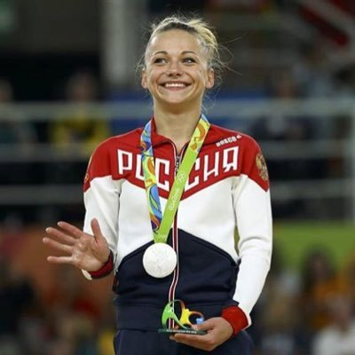

A viral clip from 2012 is missing some very important context
16 May 2026 · Stick The Landing
TL;DR
A widely-shared YouTube Shorts clip claims Maria Paseka "quit" at the 2012 Olympics. What you're actually seeing is a deliberate team strategy called a scratch, and it was entirely intentional.
The clip that's been doing the rounds
You may have seen this one. A short video clip from the 2012 London Olympics shows Russian gymnast Maria Paseka walking up to the uneven bars, tapping them - and then turning around and walking away without competing. The clip has been posted with titles like "she quit at the Olympics" and has racked up plenty of views from people apparently shocked that an elite athlete just... gave up.
Here it is:
Dramatic, right? Except that's not what happened at all.
What actually happened
What you're watching is a scratch. In gymnastics, a scratch is when a gymnast is officially withdrawn from an event - usually at the direction of their coaching staff. It's not a walkout. It's not a meltdown. It's a decision that was made before Paseka ever walked out onto the floor.
At the 2012 Olympics qualification round, Russia's other gymnasts had already posted three strong scores on the uneven bars. Under the team scoring format used at the Games, those three scores were enough. Russia's coaches had done the math: a fourth score wasn't needed, and putting Paseka up on bars was an unnecessary risk. So they pulled her from the event.
The tap on the bars? That's for the judges and the crowd - a deliberate acknowledgment that she's present, followed by a deliberate decision to step away. She knows exactly what she's doing. There's no confusion, no breakdown. She walks up, touches the apparatus, and leaves.
This is actually normal

Maria Paseka. Photo: thegymter.net
Scratching is a completely standard part of gymnastics competition, particularly at the team level. Coaches are constantly weighing risk against reward - do we put this athlete up on this event, or protect her for the next one? When a team already has the scores it needs, the answer is often: don't bother.
Russia in particular had a well-documented history of managing their athletes this way. This piece from The Couch Gymnast, written after the 2016 Rio Games, goes into more detail on how Russia approached team strategy and injury risk management. Scratching a gymnast from an event they're not needed on isn't a sign of weakness - it's smart coaching.
Paseka herself competed in other events at the 2012 Games. She was very much still there and very much still competing.
The real takeaway
"She quit" is doing a lot of work for a clip that shows the opposite.
A 15-second video stripped of context can be made to look like almost anything. The framing here - "she quit at the Olympics" - is doing all the heavy lifting. The video itself doesn't show a quit. It shows a scratch: a pre-planned, coach-approved decision that is entirely routine in elite gymnastics.
This kind of thing is everywhere online. A clip gets lifted from its original context, given a misleading title, and suddenly it's going viral with thousands of people in the comments convinced an elite athlete had a public breakdown. It's worth pausing before sharing something like this and asking: what's the full story here?
In this case, the full story is pretty simple: Russia's coaches made a sensible call, Paseka followed it, and the clip has been mislabelled ever since.
See the full season leaderboards
Track every Victorian club and athlete across WAG and MAG - updated throughout the season.